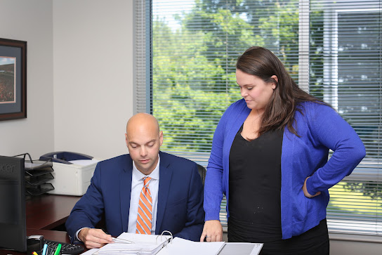

Big Rig Negligence In Birmingham
Commercial trucking incidents can raise legal questions that are not always present in ordinary passenger-vehicle disputes. Truck Accident Lawyer Birmingham can explain how duties of care are assessed under traffic laws and commercial transportation standards, including concerns involving fatigue, distraction, speed, and cargo securement. A focused consultation may also help distinguish an unfortunate mistake from conduct that may meet the legal definition of negligence. Truck Accident Lawyer Birmingham can discuss how causation is evaluated and which questions deserve attention before a person chooses a legal path.
The governing framework may also depend on the vehicle's use, the roadway setting, and the regulations applicable to its operation. Hours-of-service requirements, inspection duties, driver qualifications, and weight restrictions can require careful interpretation rather than a quick conclusion. Truck Accident Lawyer Birmingham may help translate technical standards into plain language and explain how a possible violation relates to the legal elements of a case. Speaking with Truck Accident Lawyer Birmingham can also clarify the difference between an administrative infraction and a fact that may support a civil action, while helping a person evaluate the strengths and limitations of a proposed strategy.
No two roadway disputes present exactly the same legal or practical questions. A thoughtful consultation can set realistic expectations, identify the issues that deserve priority, and explain whether negotiation, mediation, or litigation may be appropriate. Truck Accident Lawyer Birmingham can offer individualized guidance in plain language while keeping the discussion focused on governing rules and the person's goals. Seeking advice early may make it easier to understand available choices and approach the matter with greater confidence.

Navigating Tractor Trailer Injury Lawsuits
When a serious roadway incident creates substantial losses, legal review can clarify whether responsibility may extend beyond the person operating the vehicle. A qualified Truck Accident Lawyer Birmingham can explain how ownership arrangements, employment relationships, vehicle design, and outside service providers may affect the analysis. A Truck Accident Lawyer Birmingham can also help define the issues that matter under applicable state law and identify a practical course for pursuing relief.
Financial recovery may involve more than repair bills. Depending on the circumstances, a claim may account for missed work, reduced earning capacity, necessary household services, property damage, and emotional distress. Truck Accident Lawyer Birmingham can help assess whether a proposed resolution addresses both documented losses and reasonably foreseeable consequences. If discussions do not produce a satisfactory result, Truck Accident Lawyer Birmingham may explain mediation, court proceedings, and the likely timetable associated with each option.
A strong legal strategy also depends on clear expectations between a client and counsel. Prospective clients should ask about communication practices, fee arrangements, decision-making authority, and the role they will play in major steps. Choosing Truck Accident Lawyer Birmingham who explains alternatives plainly, protects confidentiality, and avoids promises about a particular outcome can make a complex dispute more manageable while supporting informed decisions as the matter develops.
Commercial Truck Crash Case Review
After a serious injury, a clear record of treatment, missed work, and day-to-day limitations can make the personal and financial impact easier to evaluate. Guidance from Truck Accident Lawyer Birmingham may help an individual organize medical invoices, wage information, and notes about recovery without overstating or minimizing the harm. An initial discussion with Truck Accident Lawyer Birmingham can also clarify which losses deserve attention and what information may be useful before any resolution is considered.
Financial consequences may continue after initial care, especially when recovery affects earning capacity, household responsibilities, or planned activities. Truck Accident Lawyer Birmingham can help assess employment records, tax documents, benefit information, and reasonable future-care projections when estimating the full effect. With Truck Accident Lawyer Birmingham, a person may approach communications with an insurer more thoughtfully and evaluate proposed terms against documented needs.
Before accepting an offer or signing a release, a person should understand what rights may be given up and whether future needs have been considered. Truck Accident Lawyer Birmingham may help explain the practical meaning of settlement language, identify unresolved questions, and compare available options. Careful review supports a measured decision and helps keep the process aligned with the individual's circumstances.
WETTERMARK KEITH
WETTERMARK KEITH
100 Grandview Pl Suite 530, Birmingham, AL 35243
(866) 630-4111